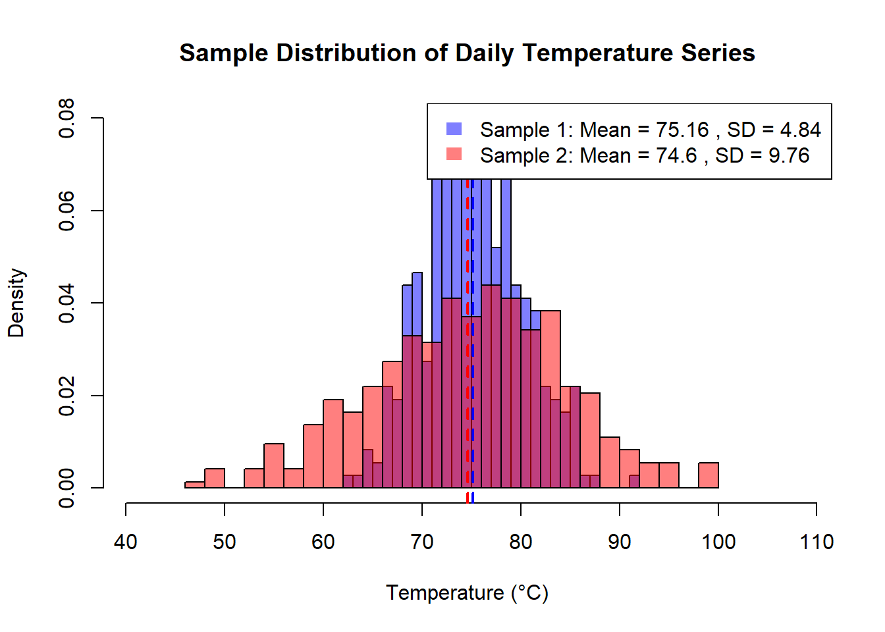

library(ggplot2)Sample Statistics and Correlation
Chapter 2
2 Chapter 2
(I known this looks funky, its a quarto numbering quirk, I assume the when we host through the school they will get around this with something more versatile.)
2.1 Motivate the chapter. Why does it matter?
2.1.1 Connect this with Ch1.1
2.2 Differentiate population and sample properties and statistics
2.2.1 Define population and samples
2.2.2 Illustrate population and samples using pdf and histogram
2.3 Contrast parameters and statistics, estimators and estimates
2.4 Calculate a sample arithmetic mean
2.4.1 Define expected value and sample mean
The expected value, also known as the population mean, represents the true average value of the entire population you’re interested in. Unfortunately, obtaining the data for the entire population can be impractical or even impossible. This is where sample mean comes in.
# Sample data
data <- data.frame(val=rnorm(200, 1.37)) # Generate 20 random numbers from a normal distribution
# Sample mean calculation
sample_mean <- mean(data$val)
# Print the sample mean
cat("Sample mean:", sample_mean, "\n")Sample mean: 1.304522 2.4.2 Explain the intuition of sample mean using a histogram
A histogram helps visualize the distribution of the data points in your sample. The sample mean, by definition, tends to be concentrated around the center of this distribution. The more data points you have in your sample, the closer the sample mean gets to the true expected value.
# Histogram with sample mean highlighted
ggplot(data, aes(x = val)) +
geom_histogram(bins = 15, color = "lightblue") + # Adjust bin count as needed
labs(x = "Data value", y = "Frequency", title = "Sample mean distribution") +
geom_vline(xintercept = sample_mean, color = "red", linetype = "dashed", lwd = 2, label = "Sample Mean") +
theme_classic() # Optional: adjust plot aestheticsWarning in geom_vline(xintercept = sample_mean, color = "red", linetype =
"dashed", : Ignoring unknown parameters: `label`
By looking at the histogram, you can see how the data points tend to cluster around the sample mean, providing an intuition for how it estimates the true expected value of the population.